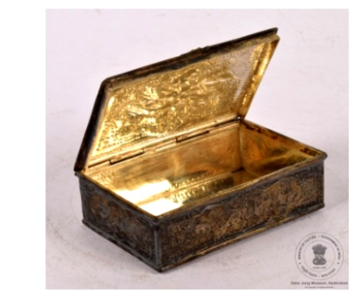

🔇 Is bhasha me is vastu ka audio abhi uplabdh nahi hai.
9. मसाला डिब्बा

अभिलेख संख्या: XLIV-350
यह आयताकार समतल तले वाला मसाला डिब्बा है, जिसकी ढक्कन कुंडीदार है। इसके सजावटी पैनलों में पक्षियों, जानवरों और फूलों की उभरी हुई आकृतियाँ अंकित हैं, जिनके चारों ओर फूलों की लताओं की नक्काशी की गई है। जानवरों और पक्षियों की आकृतियाँ अत्यंत सुंदरता से उत्कीर्ण की गई हैं, तथा चारों ओर फूलों की लताओं की किनारी बनी हुई है। इस पर किया गया कार्य अत्यंत उत्कृष्ट है, और विभिन्न भागों में देखने योग्य अनेक सूक्ष्म विवरण हैं। डिज़ाइनों में काले रंग का पेंट भरा गया है। ऊपर के काले पैनल में उभरी हुई पशु आकृतियाँ हैं। यह एक अत्यंत दुर्लभ वस्तु है, जिसमें असाधारण स्तर की शिल्पकला दिखाई देती है। यह मसाला डिब्बा 19वीं शताब्दी के उत्तरार्ध का है और भारत से संबंधित है।
9. Spice Box
Acc No: XLIV-350
This is a rectangular flat-bottomed spice box with a hinged lid. Its decorative panels carry raised figures of birds, animals and flowers, surrounded by carved floral creepers. The figures of the animals and birds have been engraved with great beauty, and a border of floral creepers runs all around. The work executed on it is most excellent, and there are many fine details worth seeing across the different parts. The designs are filled with black paint. The black panel on top carries raised animal figures. This is an extremely rare object, displaying an extraordinary level of craftsmanship. This spice box belongs to the later part of the 19th century and is related to India.
9. సుగంధ ద్రవ్యాల పెట్టె
Acc No: XLIV-350
ఇది సుగంధ ద్రవ్యాల పెట్టె 19వ శతాబ్దం చివరి భాగం నాటి భారతదేశం నుండి వచ్చిన అత్యంత అరుదైన కళాఖండం. ఇది దీర్ఘచతురస్రాకారంలో, చదునైన అడుగు భాగం మరియు కీలు మూత కలిగి ఉంది. ఈ పెట్టె చుట్టూ, తక్కువ ఉబ్బెత్తు లో పూల లతలతో పాటు, అలంకార పలకలలో పక్షులు, జంతువులు మరియు పూల బొమ్మలు అందంగా చెక్కబడ్డాయి. జంతువులు మరియు పక్షుల బొమ్మలు చక్కగా చెక్కబడి, వాటి చుట్టూ పూల లత అంచు ఉంది. ఈ డిజైన్లలోని ఖాళీలలో నలుపు రంగు పెయింట్ నింపబడింది. మూత పైభాగంలో నలుపు రంగు పలకపై ఉబ్బెత్తుగా ఉన్న జంతువులు కనిపిస్తున్నాయి. विभिन्न భాగాలలో చూడదగిన అనేక వివరాలు ఈ పెట్టెలో ఉన్నాయి. దీనిపై చేసిన పనితనం అత్యున్నత స్థాయి కళా నైపుణ్యాన్ని ప్రదర్శిస్తుంది.
۹. مسالہ دان
Acc No: XLIV-350
یہ مستطیل شکل کا مسالہ دان ہموار نچلی سطح کا حامل ہے اور اس پر قبضہ دار ڈھکن نصب ہے۔ اس پر آرائشی پینلوں میں پرندوں جانوروں اور پھولوں کی ابھری ہوئی تصاویر نہایت نفاست سے نقش کیے گیے ہیں جبکہ چاروں جانب ہلکے ابھار میں پھول دار بیل بوٹوں کی نقش آرائی کی گئی ہے۔ آرائشی خانوں میں جانوروں اور پرندوں کے نقوش انتہائی خوب صورتی سے تراشے گئے ہیں، اور پورے ڈبے کے گرد پھول بوٹے کے بارڈر اس کی دلکشی میں اضافہ کرتے ہے۔ مختلف حصوں میں پھیلے ہوئے یہ مناظر اس قدر باریک بینی سے تراشے گئے ہیں کہ ہر اجزاء میں دیکھنے کے لیے بہت کچھ موجود ہے۔ نقوش کو نمایاں کرنے کے لیے ان میں سیاہ رنگ بھرا گیا ہے۔ اوپری حصے پر سیاہ پینل میں جانوروں کی ابھری ہوئی تصاویر بنی ہوئی ہیں۔ یہ نہایت نایاب چیز ہے جو اعلیٰ درجے کی دستکاری اور غیر معمولی فنی مہارت کا مظہر ہے ۔ یہ مسالہ دان ہندوستان سے تعلق رکھتا ہے اور انیسویں صدی کے آخری عشرے کا ہے۔
৯. মশলাদানি
Acc No: XLIV-350
আয়তাকার সমতল তলদেশযুক্ত এই মশলাদানিটিতে কব্জাযুক্ত ঢাকনা রয়েছে। এর শোভাবর্ধক প্যানেলগুলিতে পাখি, প্রাণী এবং ফুলের উদীয়মান আকৃতি খোদাই করা আছে, আর চারপাশের বর্ডারে ফুলের লতার হালকা খোদাই করা নকশা রয়েছে। অত্যন্ত সুনিপুণভাবে প্রাণী ও পাখির আকৃতিগুলি ফুটিয়ে তোলা হয়েছে। নকশার ভেতরে কালো রঙের প্রলেপ দেওয়া হয়েছে। ওপরের কালো প্যানেলে উদীয়মান প্রাণীর আকৃতিগুলি রয়েছে। এই মশলাদানিটি অত্যন্ত বিরল এবং এতে দেখা যাওয়া কারিগরির মান অসাধারণ। এই মশলাদানিটি ভারত থেকে প্রাপ্ত এবং এটি ১৯ শতকের শেষের দিকে নির্মিত।
9. મસાલિયું
Acc No: XLIV-350
આ આયાતાકાર સમતળ તળિયાવાળું મસાલેદાણું હિન્જવાળું ઢાંકણું ધરાવે છે. શોભાદાયક પેનલોમાં પક્ષીઓ, પ્રાણીઓ અને ફૂલોના ઊભરેલા આકારો કોતરાયેલા છે, જ્યારે બાજુઓ પર ફૂલ-લતાવાળી નકશી હળવી ઊભરેલી દેખાય છે. સુંદર રીતે કોતરાયેલા પ્રાણીઓ અને પક્ષીઓના આકારો શોભાદાયક પેનલોમાં મૂકાયેલા છે, અને બોક્સની આસપાસ ફૂલ-લતાવાળી બોર્ડર છે. કારીગરી ખૂબ જ ઉત્કૃષ્ટ છે અને દરેક ભાગમાં જુદી જુદી રસપ્રદ વિગતો જોવા મળે છે. ડિઝાઇનમાં કાળી રંગની ભરાવટ કરવામાં આવી છે. ઉપરના કાળા પેનલમાં ઊભરેલા પ્રાણીઓની આકૃતિઓ છે. આ મસાલેદાણું અત્યંત દુર્લભ છે અને તેમાં જોવા મળતી કારીગરીનું સ્તર અસામાન્ય રીતે ઉત્તમ છે. આ મસાલેદાણું ભારતનું છે અને તેનો સમય 19મી સદીના અંતકાળનો માનવામાં આવે છે.
9. ಸ್ಪೈಸ್ ಬಾಕ್ಸ್
Acc No: XLIV-350
ಆಯತಾಕಾರದ ಹಾಗೂ ಸಮತಟ್ಟಾದ ತಳಭಾಗವನ್ನು ಹೊಂದಿರುವ ಸಾಂಬಾರ ಪದಾರ್ಥಗಳ ಪೆಟ್ಟಿಗೆಯ ಅದ್ಭುತ ಕಲಾಕೃತಿ ಇದಾಗಿದ್ದು, ಇದು ಕೀಲುಗಳಿಂದ ಕೂಡಿದ ಮುಚ್ಚಳವನ್ನು ಹೊಂದಿದೆ. ಇದರ ಸುತ್ತಲೂ ಕಡಿಮೆ ಉಬ್ಬು ಕೆತ್ತನೆಯಲ್ಲಿ ಹೂವಿನ ಬಳ್ಳಿಗಳಿದ್ದು, ಅಲಂಕಾರಿಕ ಫಲಕಗಳಲ್ಲಿ ಪಕ್ಷಿಗಳು, ಪ್ರಾಣಿಗಳು ಮತ್ತು ಹೂವುಗಳ ಉಬ್ಬು ಚಿತ್ರಗಳನ್ನು ಸುಂದರವಾಗಿ ಮೂಡಿಸಲಾಗಿದೆ. ಪೆಟ್ಟಿಗೆಯ ಸುತ್ತಲೂ ಹೂವಿನ ಬಳ್ಳಿಯ ಅಂಚುಗಳಿದ್ದು, ಈ ಅಲಂಕಾರಿಕ ಫಲಕಗಳಲ್ಲಿ ಪ್ರಾಣಿ ಮತ್ತು ಪಕ್ಷಿಗಳ ಆಕೃತಿಗಳನ್ನು ಅತ್ಯಂತ ಕಲಾತ್ಮಕವಾಗಿ ಕೆತ್ತಲಾಗಿದೆ. ಈ ವಿನ್ಯಾಸಗಳ ಒಳಗೆ ಕಪ್ಪು ಬಣ್ಣವನ್ನು ತುಂಬಲಾಗಿದೆ. ಇದರ ಮೇಲ್ಭಾಗದಲ್ಲಿರುವ ಕಪ್ಪು ಬಣ್ಣದ ಫಲಕವು ಉಬ್ಬು ಕೆತ್ತನೆಯ ಪ್ರಾಣಿಗಳನ್ನು ಹೊಂದಿದೆ. ಇದರ ಮೇಲಿನ ಕರಕುಶಲ ಕೆಲಸವನ್ನು ಅತ್ಯಂತ ನಾಜೂಕಾಗಿ ಮಾಡಲಾಗಿದ್ದು, ಇದರ ವಿವಿಧ ಭಾಗಗಳಲ್ಲಿ ಗಮನಿಸಲು ಮತ್ತು ಆನಂದಿಸಲು ಸಾಕಷ್ಟು ಸೂಕ್ಷ್ಮ ವಿವರಗಳಿವೆ. ಇದು ಅತಿ ವಿರಳವಾಗಿ ಕಂಡುಬರುವ, ಅತ್ಯುನ್ನತ ಮಟ್ಟದ ಕರಕುಶಲತೆಯನ್ನು ಹೊಂದಿರುವ ಬಹು ಅಪರೂಪದ ಕಲಾಕೃತಿಯಾಗಿದೆ. ಭಾರತದಲ್ಲಿಯೇ ರೂಪುಗೊಂಡಿರುವ ಸಾಂಬಾರ ಪದಾರ್ಥಗಳ ಈ ಪೆಟ್ಟಿಗೆಯು 19ನೇ ಶತಮಾನದ ಅಂತ್ಯದ ಕಾಲಕ್ಕೆ ಸೇರಿದೆ.
୯. ମସଲା ଡବା
Acc No: XLIV-350
ଏହା ଗୋଟିଏ ଆୟତାକାର ଏବଂ ସମତଳ ପୃଷ୍ଠ ବିଶିଷ୍ଟ ମସଲା ଡବା ଯାହାକୁ ଉପରେ ବନ୍ଦ କରିବା ପାଇଁ ଢାଙ୍କୁଣୀ ରହିଛି। ଉପର ଭାଗରେ ଥିବା ପ୍ୟାନେଲରେ ବିଭିନ୍ନ ପ୍ରକାର ପକ୍ଷୀ, ଜୀବ ଏବଂ ଫୁଲର ଚିତ୍ର ରହିଛି, ଚାରିପାଖରେରେ ମଧ୍ୟ ବହୁ ପ୍ରକାର ଲତା ଫୁଲର ଚିତ୍ର ଖୋଦିତ ହୋଇଥିବାର ଦେଖିବାକୁ ମିଳିଥାଏ। କାରୁକାର୍ଯ୍ୟଟି ଅତ୍ୟନ୍ତ ମନ ମୁଗ୍ଧକର ଅଟେ, ଏବଂ ବିଭିନ୍ନ ଦିଗକୁ ଲକ୍ଷ୍ୟ କଲେ ବହୁତ ପ୍ରକାର ଚିତ୍ରକଳା ପରିଲକ୍ଷିତ ହୋଇଥାଏ। କଳା ରଙ୍ଗରେ ଏଥିରେ ଥିବା କାରୁକାର୍ଯ୍ୟକୁ ରଙ୍ଗିତ କରାଯାଇଛି। ପ୍ୟାନେଲରେ ଥିବା ଅତିରିକ୍ତ ପ୍ରାଣୀମାନଙ୍କୁ ମଧ୍ୟ କଳା ରଙ୍ଗରେ ଚିତ୍ରିତ କରାଯାଇଛି। ଏହା ଅତ୍ୟନ୍ତ ବିରଳ ଧାତୁକଳା, ଯାହା କି ଏକ ଉଚ୍ଚ ସ୍ତରର କାରିଗରୀର ନମୁନାକୁ ସୂଚାଇ ଥାଏ ଏବଂ ବହୁତ କମ୍ ଏହି ଶୈଳୀର ପ୍ରୟୋଗ କରିଥିବାର ଦେଖିବାକୁ ମିଳିଥାନ୍ତି। ଏହା ଊନବିଂଶ ଶତାବ୍ଦୀର ଶେଷ ଭାଗରେ ନିର୍ମିତ ହୋଇଥିଲା। ଏହି ମସଲା ବାକ୍ସଟି ଭାରତର କାରୁକାର୍ଯ୍ୟକୁ ଦର୍ଶାଇଥାଏ।
9. मसाला डिब्बा
अभिलेख संख्या: XLIV-350
यह आयताकार समतल तले वाला मसाला डिब्बा है, जिसकी ढक्कन कुंडीदार है। इसके सजावटी पैनलों में पक्षियों, जानवरों और फूलों की उभरी हुई आकृतियाँ अंकित हैं, जिनके चारों ओर फूलों की लताओं की नक्काशी की गई है। जानवरों और पक्षियों की आकृतियाँ अत्यंत सुंदरता से उत्कीर्ण की गई हैं, तथा चारों ओर फूलों की लताओं की किनारी बनी हुई है। इस पर किया गया कार्य अत्यंत उत्कृष्ट है, और विभिन्न भागों में देखने योग्य अनेक सूक्ष्म विवरण हैं। डिज़ाइनों में काले रंग का पेंट भरा गया है। ऊपर के काले पैनल में उभरी हुई पशु आकृतियाँ हैं। यह एक अत्यंत दुर्लभ वस्तु है, जिसमें असाधारण स्तर की शिल्पकला दिखाई देती है। यह मसाला डिब्बा 19वीं शताब्दी के उत्तरार्ध का है और भारत से संबंधित है।
9. സുഗന്ധവ്യഞ്ജന പെട്ടി
Acc No: XLIV-350
നിരപ്പായ അടിഭാഗത്തോടു കൂടിയ ചതുരാകൃതിയിലുള്ള മനോഹരമായ ഒരു സുഗന്ധവ്യഞ്ജന പെട്ടിയാണിത്. വിജാഗിരികളാൽ ഘടിപ്പിച്ച ഒരു മൂടി ഇതിനുണ്ട്. പക്ഷികൾ, വന്യമൃഗങ്ങൾ, പൂക്കൾ എന്നിവയുടെ രൂപങ്ങൾ ഇതിലെ അലങ്കാര പാനലുകളിൽ മനോഹരമായി കൊത്തിവെച്ചിരിക്കുന്നു. പെട്ടിക്ക് ചുറ്റുമായി പുഷ്പലതാദികളുടെ മാതൃകകൾ ആഴം കുറഞ്ഞ രീതിയിൽ ആലേഖനം ചെയ്തിട്ടുണ്ട്. വ്യത്യസ്തങ്ങളായ അറകളിൽ പക്ഷികളുടെയും മൃഗങ്ങളുടെയും രൂപങ്ങൾ അതീവ കൃത്യതയോടെയാണ് കൊത്തിയിരിക്കുന്നത്.
ഈ ഡിസൈനുകൾക്ക് കൂടുതൽ തെളിച്ചവും മിഴിവും നൽകാനായി കറുത്ത നിറത്തിലുള്ള വർണ്ണക്കൂട്ട് ഇതിൽ ഉപയോഗിച്ചിട്ടുണ്ട്. പെട്ടിയുടെ മുകൾഭാഗത്തുള്ള കറുത്ത പാനലിൽ മൃഗങ്ങളുടെ രൂപങ്ങൾ ഉപരിതലത്തിൽ നിന്ന് ഉയർന്നുനിൽക്കുന്ന രീതിയിൽ കാണാം. അപൂർവ്വമായി മാത്രം കാണപ്പെടുന്ന ഉന്നത നിലവാരത്തിലുള്ള കരകൗശല വൈഭവം ഇതിൻ്റെ ഓരോ ഭാഗങ്ങളിലും ദൃശ്യമാണ്. ഭാരതത്തിൽ നിർമ്മിക്കപ്പെട്ട ഈ സുഗന്ധവ്യഞ്ജന പെട്ടി പത്തൊൻപതാം നൂറ്റാണ്ടിൻ്റെ അവസാന കാലഘട്ടത്തിലേതാണ്.
ഈ ഡിസൈനുകൾക്ക് കൂടുതൽ തെളിച്ചവും മിഴിവും നൽകാനായി കറുത്ത നിറത്തിലുള്ള വർണ്ണക്കൂട്ട് ഇതിൽ ഉപയോഗിച്ചിട്ടുണ്ട്. പെട്ടിയുടെ മുകൾഭാഗത്തുള്ള കറുത്ത പാനലിൽ മൃഗങ്ങളുടെ രൂപങ്ങൾ ഉപരിതലത്തിൽ നിന്ന് ഉയർന്നുനിൽക്കുന്ന രീതിയിൽ കാണാം. അപൂർവ്വമായി മാത്രം കാണപ്പെടുന്ന ഉന്നത നിലവാരത്തിലുള്ള കരകൗശല വൈഭവം ഇതിൻ്റെ ഓരോ ഭാഗങ്ങളിലും ദൃശ്യമാണ്. ഭാരതത്തിൽ നിർമ്മിക്കപ്പെട്ട ഈ സുഗന്ധവ്യഞ്ജന പെട്ടി പത്തൊൻപതാം നൂറ്റാണ്ടിൻ്റെ അവസാന കാലഘട്ടത്തിലേതാണ്.